Insert project 09
s.design · v1.20 · 2026-11-10
Design system
המפרט של האתר: טוקנים, רכיבים, מצבים ותנועה. כל רכיב בעמוד הזה הוא הרכיב האמיתי מ-style.css ו-main.js (נטען לקריאה בלבד), כך שאין פער בין המסמך לאתר.
מקור האמת לערכים: assets/css/style.css (בלוק :root). העתק עם שמות לכל הצבעים: design-system/tokens.css + tokens.json. הזהות, הקול והסושיאל: brand-book.html.
01 / Tokens
Colour tokens
| Token | Value | שימוש | |
|---|---|---|---|
--bg | #0B0408 | רקע הדף | |
--bg-2 | #12060F | רקע של חלונות וכרטיסים | |
--surface | #180914 | משטח מורם | |
--pink | #FF7BF8 | ראשי: כותרות, כפתור, מסגרת פעילה, glow | |
--pink-hover* | #FFA3FA | hover של כפתור ראשי | |
--pink-soft | #FFC4FC | lead, chips, טקסט בפאגר | |
--pink-dim | #93408F | צל offset של כפתורים, chips, חצים | |
--pink-deep | #3B1440 | צל של חלונות; דיו על נייר | |
--text | #F7C4EE | טקסט רץ | |
--muted | #B07AA5 | מטא, תוויות, מספרים, ניווט לא פעיל | |
--line | rgba(255,123,248,.18) | קווי הפרדה, גבול ניווט | |
--line-strong | rgba(255,123,248,.45) | מסגרת של כרטיס/chip במנוחה | |
--yellow* | #FFE15C | רק "+1" במשחק | |
--paper* | #F6EFF2 | קולאז' ו-View-Master | |
--kraft* | #F2D7A0 | מדבקת תווית | |
--amber* | #E8A33A | קוד על הפילמסטריפ |
* באתר הערכים האלה כתובים כ-hex ישירות ב-style.css. השמות קיימים ב-design-system/tokens.css כדי שיהיה לנו שם אחד לכל צבע בסושיאל וב-Figma.
Effectsצללים ו-glow
| Token | Value | איפה |
|---|---|---|
--glow | 0 0 4px pink/.65, 0 0 18px pink/.3 | כותרות .glow, loader, סמן הבלוק |
--shadow-btn | 4px 4px 0 --pink-dim | .btn (hover: 5px) |
--shadow-sm | 3px 3px 0 --pink-dim | chip פעיל, .card__go, חצי הפאגר |
--shadow-window | 8px 8px 0 --pink-deep | .window, embeds |
--shadow-sticker | 4px 4px 0 --pink-deep | מדבקות קולאז' |
כלל: צללים תמיד אטומים, בלי blur, למטה-ימינה. היחיד שמטושטש הוא ה-glow.
02 / Type
Type scale
| Role | Class | Font | Size | LH / tracking | Case |
|---|---|---|---|---|---|
| Hero | .hero__title | Jersey 10 | clamp(46px, 7.8vw, 122px) | .78 / .01em | UPPER |
| Page title | .page-head__title | Jersey 10 | clamp(64px, 11vw, 156px) | .85 | UPPER |
| Section | .h2 | Jersey 10 | clamp(48px, 7.2vw, 96px) | .9 / .01em | UPPER |
| Card title | .card__title | Jersey 10 | 28px (26 in grid) | — / .02em | UPPER |
| Lead | .about__text .lead | Space Grotesk 500 | clamp(22px, 2.3vw, 30px) | 1.35 | Sentence |
| Body | body | Space Grotesk | 18px | 1.6 | Sentence |
| Note | .section__note | Space Grotesk | 16px | 1.6 | Sentence |
| Button | .btn__face | Pixelify Sans | 14px | — / .08em | UPPER |
| Eyebrow | .eyebrow | Pixelify Sans | 13px | — / .1em | UPPER |
| Nav | .nav__link | Pixelify Sans | 12px (mobile 26–40px) | — / .08em | UPPER |
| Label / meta | .card__bar, .window__foot | Pixelify Sans | 11px | — / .08em | UPPER |
| Terminal | .term__body | VT323 | 22px | 1.2 | lower |
| Loader | .loader__label | VT323 | clamp(44px, 8vw, 68px) | 1 / .04em | lower |
02 / Work
Selected work
Lead — I design products that feel like play.
Body — I design apps and websites for the person on the other side of the screen.
> 12 projects found
03 / Layout
Grid & space
| Token / rule | Value | הערה |
|---|---|---|
--maxw | 1240px | רוחב תוכן מקסימלי (.container) |
--gutter | clamp(16px, 4vw, 48px) | שוליים בצדדים |
--nav-h | 76px | גובה הניווט הקבוע |
| Section padding | clamp(96px, 13vw, 160px) | מעל ומתחת לכל .section |
| Before footer | clamp(96px, 12vw, 140px) | main, בכל עמוד (החלטה קבועה) |
| Pixel grid | 8px | dot matrix, מסכי כרטיסים, גריד הפורטרט |
| Border | 2px, square | כל מסגרת. בלי border-radius (חוץ מבר הטעינה) |
| Home work grid | 2 cols → 1 <720 | gap clamp(20px, 3vw, 36px) |
| Projects grid | 3 → 2 <1000 → 1 <640 | 9 בעמוד, gap clamp(20px, 2.6vw, 32px) |
| Card media | 16 / 10 | כל cover נחתך ל-16:10 |
Breakpointsנקודות שבירה
| Width | מה משתנה |
|---|---|
| ≤1000 | גריד פרויקטים 2 עמודות |
| ≤900 | hero נערם (הלוח למעלה), About ו-Contact בעמודה אחת, View-Master: הכרטיס יורד |
| ≤860 | תפריט מובייל, HUD נעלם, ניווט וסינון נעלמים בגלילה למטה |
| ≤720 | גריד הבית עמודה אחת, סינון בשורה נגללת, קולאז' על לוח 400×1050 |
| ≤640 / 560 / 480 | פרויקטים עמודה אחת / לוגו 26px / HUD המשחק בלי טקסט |
Z-indexשכבות
| Layer | z |
|---|---|
#dots (dot matrix) | 0 |
main, .footer | 1 |
.filters-bar (sticky) | 10 |
| עבודה בעמוד פרויקט (מעל ה-CRT שיורד ל-40) | 45 |
.hud | 50 |
.nav | 100 |
.crt (scanlines) | 9000 |
.loader | 10000 |
04 / Components
Components
כל רכיב: דוגמה חיה (אפשר לרחף וללחוץ), מצבים מוקפאים להשוואה, אנטומיה וכללים.
Button.btn / .btn--ghost
Restrest
Hoverhover · lift 1px
Pressactive · sinks 4px
Focusfocus-visible
Ghostghost rest
Ghostghost hover
Anatomy
<a class="btn">
<span class="btn__face">Label
<span class="px-ico" data-px="arrow"></span>
</span>
</a>Rules
- Pixelify Sans 14px UPPER, padding 14/24, מסגרת 2px, צל
4px 4px 0 --pink-dim, פינות ישרות. - ראשי ומשני באותה צורה בדיוק; רק המילוי שונה.
- ה-transform יושב על
.btn__face(כדי ש-.revealלא ידרוס). - אין עיצוב מקומי לכפתור. אין פינות חתוכות.
- תווית: 1–3 מילים. אייקון אחרי הטקסט (חץ), או לפני (download).
Icon button & copy.icon-btn / .copy-btn
Icon button
- 40×40, מסגרת 2px
--line-strong, אייקון 14px. - hover /
aria-pressed="true": מילוי ורוד, אייקון כהה. - תמיד עם
aria-label.
Copy button
- מסגרת 1px, Pixelify Sans 11px.
- אחרי העתקה:
.is-doneותווית "Copied!".
Chip & pager.chip / .pager
Chip
- מסגרת 2px, Pixelify Sans 12px. בלי מונה בתוך ה-chip: הספירה רק ב-
#resultCount, כדי שהשורה לא תידחס. - File count גמיש:
.filters-barהוא flex-wrap, והספירה (VT323,nowrap) יושבת מיד אחרי ה-chips, עם רווח 24px, כשיש לה מקום; כשהטקסט ארוך מדי (למשל· page 01/02) היא יורדת לשורה משלה, מיושרת לשמאל. מתחת ל-720px תמיד מתחת (ה-chips נגללים לצדדים). - מסתתר בגלילה (v1.9, כל המסכים): בגלילה למטה הניווט והסרגל מחליקים למעלה ונעלמים (
body.nav-hidden), ובגלילה קטנה למעלה (8px) חוזרים. הסרגל זז דרך ה-topשל ה-sticky, כך שהוא נעלם רק כשהוא צמוד למעלה. לא נעלמים מתחת ל-80px מראש העמוד וכשהתפריט פתוח. - פעיל: מילוי ורוד + צל 3px. hover: מסגרת ורודה.
- סדר קבוע: UX Research · UI Design · Dashboards · Mobile App · Web · Graphic Design · Set Design. טאב בלי פרויקטים לא מוצג. Graphic Design לפני האחרון, Set Design תמיד אחרון. אין Design System.
Pager
- 44×44, מספרים בשתי ספרות (
01). - חצים עם מסגרת ורודה וצל; מושבתים: שקיפות .3 בלי צל.
- מופיע רק כשיש יותר מ-9 פרויקטים בטאב.
Project card.card
Anatomy
.card__bar: שם קובץPROJECT_NN.FIG. בלי שנה..card__screen: 16:10, cover או.card__empty(קרטריג' + "Insert project")..card__foot: כותרת Jersey 28px, קטגוריות מופרדות ב-·, כפתור חץ 44×44.- החץ תמיד למעלה (
align-items: flex-start), בקו עם השורה הראשונה של הכותרת, כך שהוא באותו גובה בכל הכרטיסים גם כשכותרת נשברת ל-2–3 שורות. כותרת כרטיס קצרה: אם היא נשברת ליותר מ-2 שורות, מקצרים (מורידים מילים שלא חיוניות, כמו "Responsive" ב-Sola Games). מילה חשובה שיורדת עוברת לשורת המשנה בראש עמוד הפרויקט (.project-head__sub). - וידאו (Set Design):
.card--video, כפתור play אחד בפס התחתון, נפתח בפופ-אפ. מופיע בטאב שלו וגם ב-All, תמיד ממש בסוף, אחרי כל הפרויקטים (גם בדפדוף); לא בבית.
Hover
- הכרטיס זז
-4px -4px, מסגרת ורודה, הפס העליון מתמלא ורוד. - רעש סטטי (
.card__noise) ב-16%, החץ "דוחף" ימינה. - בלי שכבת צל כפולה מאחורי הכרטיס.
Window & terminal.window / .term
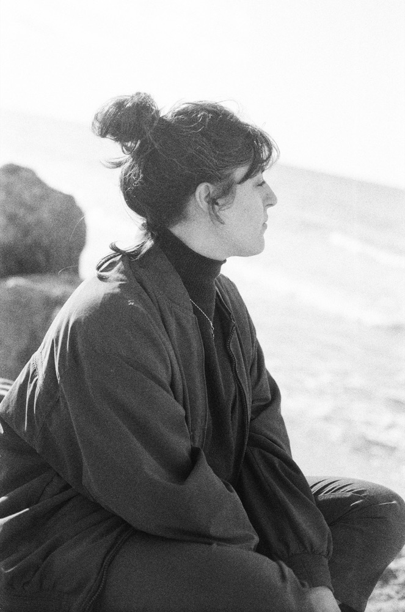
Window
- מסגרת 2px ורודה, רקע
--bg-2, צל8px 8px 0 --pink-deep. .window__bar: ורוד מלא, שם קובץ ב-Pixelify Sans 12px, 3 ריבועים (האחרון מלא)..window__footאופציונלי: מטא עם ערך מודגש ב-<b>.
Terminal
- VT323 22px, פרומפט
> name:בוורוד. - שורה: קו מקווקו; בפוקוס הופך לרציף והפרומפט זוהר.
- הודעות סטטוס באותיות קטנות עם
_בסוף.
Section head.section__head
02 / Work
Selected work
Rules
- eyebrow:
NN / Nameעם diamond, תואם למספר בניווט (Home 01 · Work 02 · About 03 · CV 04 · Contact 05). - כפתור פעולה מימין לכותרת, לא מתחת לגריד.
Rule line
.rule: קו מקווקו 4/4px ב---line-strong, תמיד בשורה משלו.
Scroll cue.scroll-cue
מתי
- כשהמסך הראשון של עמוד נראה "שלם" ויש עוד תוכן מתחת (About: אחרי הטקסט, לפני Analog).
- קישור עוגן לסקשן הבא (
href="#analog") עםaria-label. - ב-About: בתחתית עמודת הטקסט (
margin-top: auto), בקו אחד עם תחתית הפורטרט. מתחת ל-900px: 24px מתחת לטקסט.
מראה ותנועה
- Pixelify Sans
11px, letter-spacing.14em, ורוד עם glow; חץ פיקסל7×8(SVG crispEdges) בגודל14×16px. - החץ עולה ויורד
10pxב-steps(4)במשך1.1s(ב-hover מהיר פי 2); הטקסט מהבהב קלות כל 2.2s. - reduced motion: בלי אנימציה.
Eyepiece.vm__peek + dialog.eyepiece
click to peek in
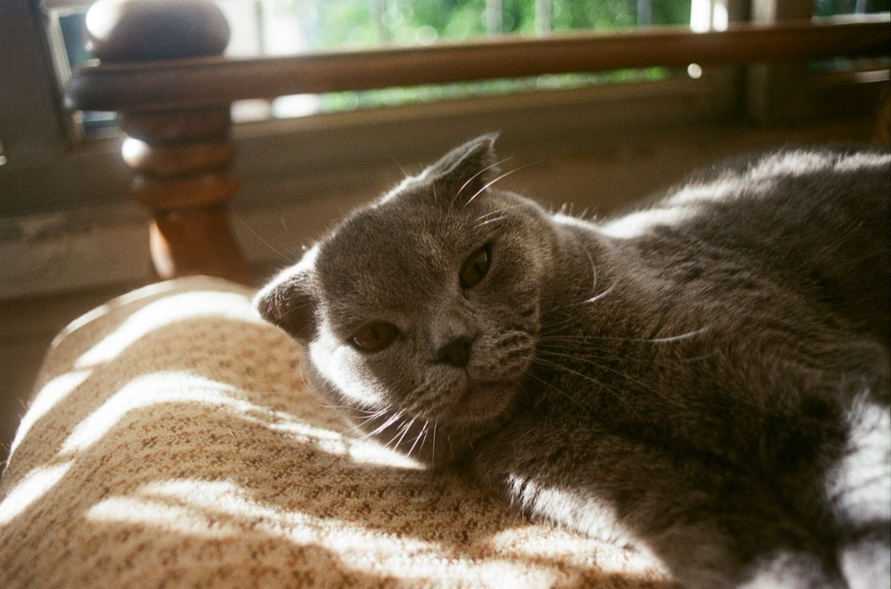
01/07I live with two cats
הפעלה
- שתי העדשות של ה-View-Master הן
<button>(הגוף סביבןpointer-events: none). hover/פוקוס: העדשה מתבהרת ומתחתיה תגית ניירclick to peek in(.vm__hint.vm__peek, חץ למעלה, עוברת לעדשה שמעליה). - במסכי מגע (
hover: none) התגית תמיד מוצגת, ממורכזת:tap to peek in. - קליק על עדשה פותח את החלון ולא מושך את הידית.
החלון
- ממורכז,
min(920px, 100vw − 32px), מסגרת 2px ורודה + צל offset;window__barעםslide_0N.viewו-X. backdrop שחור 90% + blur 4px. - חלל כהה נדיב סביב השקופית:
padding: clamp(28px, 6vw, 72px)(24px במובייל), הילה כהה רדיאלית. - השקופית: יחס 1.68 כמו העדשות (4:3 במובייל), פינות מעוגלות, vignette,
--grain, השתקפות, גוון חם (sepia .18), זוהר של אור מאחור, הבהוב עדין.
תנועה וסאונד
- כניסה: "מצמידים את העיניים", זום מ-1.25 + blur ב-
steps(8), .6s. - חצים / מקשי חיצים = אותו
pull()של המשקפת: ידית, מצמוץ תריס ו-Sound.reel()בלבד (הקליק עוצר propagation, בלי ה-select הכללי). המשקפת והכרטיס מתעדכנים יחד. - סגירה: X, Esc, קליק בחוץ. reduced motion: בלי זום והבהוב.
Lists.socials / .tags / .timeline
Graphic Designer
- Design print and retail marketing solutions.
Freelance UX/UI Designer
Socials
- סדר קבוע: LinkedIn, Instagram, Behance. בלי Dribbble.
- hover: השורה מתמלאת ורוד ונכנסת 16px.
Tags / timeline
- tags רק ב-CV (Tools). לא ב-About.
- timeline: קו מקווקו אנכי ונקודת "+" פיקסלית; תאריכים ב-
<b>.
Other site componentsרכיבים מיוחדים (מפורטים ב-context/02)
| Component | Class / function | עיקר |
|---|---|---|
| Nav | .nav · initNav | לוגו 30px, קישורים עם אייקון, פעיל = מילוי ורוד; במובייל תפריט מסך מלא |
| HUD | .hud | LVL של הסקשן + קואורדינטות עכבר, רק בדסקטופ. בעמוד פרויקט (v1.20, initLevels): ה-LVL עוקב אחרי הסקשן שקוראים (.cs-sec[id]): LVL 04 — persona, לפי סדר ה-Levels; בראש העמוד חוזר לטקסט המקורי |
| Next project | a.cs-next · initNextProject | (v1.20) בסוף כל עמוד פרויקט, לינק טקסט שקט ולא כפתור: תווית Next project (Pixelify Sans 11px, muted) ומתחתיה שם הפרויקט הבא (13px, --text, ורוד ב-hover) עם חץ שלא נשבר לשורה לבד. ממורכז, מתחת ל-"Thank you for watching" (.cs-end), וב-project.html מתחת לגלריה. נבנה ב-JS מהסדר ב-PROJECTS (בלי סטים ובלי placeholders), והאחרון חוזר לראשון. אין מה לערוך ב-HTML |
| Back to top | .icon-btn.to-top · initToTop | (v1.20) כפתור אייקון קטן מרחף (40px, .icon-btn עם רקע --bg וצל offset 3px, אייקון up; אף פעם לא כפתור ראשי), בכל העמודים. מופיע אחרי גלילה של מסך אחד, ומחזיר לראש העמוד. בדסקטופ בפינה הימנית, מעל ה-HUD (bottom: 56px); במובייל 16px / 20px מהפינה |
| Skip link | .skip-link · initSkipLink | (v1.20) "Skip to content": התחנה הראשונה של Tab בכל עמוד, נראה רק בפוקוס מקלדת (ורוד מלא, מסגרת 2px, צל offset), ומעביר את הפוקוס ל-main |
| Trophy | .footer__trophy · initTrophy | (v1.20) מי שאסף 5/5 ב-hero מקבל בפוטר, אחרי "Designed with passion", אייקון trophy + 5/5 בצהוב (#FFE15C, תגמולים בלבד), בכל העמודים. נשמר ב-localStorage['px-toolkit'] |
| Cheat code | .confetti · initKonami | (v1.20) ↑↑↓↓←→←→BA: Sound.fanfare(), קונפטי פיקסלים (ורוד / ורוד בהיר / צהוב, נפילה ב-steps(16)) ושורה ב-HUD ל-3.6 שניות: Cheat code accepted — +30 lives. ב-reduced motion בלי קונפטי |
| 404 | 404.html | (v1.20) page-head רגיל: eyebrow 404 / File not found, כותרת Game over, "This level doesn't exist. Continue?", כפתור ראשי Continue (בית) ומשני All projects |
| Page transition | @view-transition · initPrefetch | (v1.20) מעבר בין עמודים: דיזולב קצר בצעדים (יציאה .14s steps(4), כניסה .2s steps(5)) במקום חיתוך; דפדפן שלא תומך פשוט מנווט. בלי אנימציה ב-reduced motion. לינק פנימי נטען מראש ב-hover / פוקוס (rel=prefetch) |
| Contact form | #contactForm · CONFIG.formEndpoint | (v1.20) עם endpoint של Formspree הטופס נשלח באמת: > sending... → > message sent_ talk soon!; בכישלון נפתחת תוכנת המייל (mailto). הטופס ב-Formspree: My portfolio, נשלח למייל של שירן |
| Loader | .loader · runLoader | טרמינל "loading...", שנייה אחת, רק בכניסה ראשונה/רענון |
| Hero game | #player · initPlayer | דמות פיקסל, איסוף 5 חפצים, HUD ו-achievement. כרטיס ה-achievement (.hero__hud.is-win) גדול מעט מה-HUD (v1.20): טקסט 12px, כותרת 13.5px, padding 15/21px |
| Marquee | .marquee · initMarquee | תמיד מלא, 55px/s, מפריד pixel spark |
| Portrait | .portrait · initPortrait | "enhance" חד-פעמי, גוון ורוד multiply |
| Collage | .collage, .snap, .filmstrip, .sticker | לוח 4:3 עם מיקומים ב-inline vars |
| View-Master | .vm · initFacts | 7 עובדות, דיסק נייר, משקפת SVG; מתחת ל-720px רוחב 86% וממורכזת, כך שהידית, תגית pull me! והצללים נשארים בתוך הגריד עם אוויר בצדדים. כרטיס העובדות בגובה קבוע (fitCard: הגובה של העובדה הארוכה ביותר, נמדד מחדש ב-resize), בדסקטופ ובמובייל. הדיסק חצי בחוץ וחצי בפנים: החריץ חוצה אותו באמצע (.vm__body ב-top: 30.6%). שתי העדשות הן כפתורים (v1.13) שפותחים את ה-Eyepiece; קליק בשאר המשקפת מושך את הידית |
| Eyepiece | dialog.eyepiece · initFacts | השקופית הנוכחית בחלון ממורכז עד 920px, חצים מסונכרנים עם המשקפת, X / Esc / קליק בחוץ (ראו Eyepiece למעלה) |
| Video modal | .vmodal · initVideoModal | עד 880px, X / Esc / קליק בחוץ (כלל לכל פופ-אפ) |
| Footer | .footer | "Designed with passion" + לב פיקסלי |
05 / Icons
Pixel icons
האייקונים הם מפות מחרוזת ב-PX (main.js): # = פיקסל, . = ריק. pxSVG() הופך אותן ל-SVG עם shape-rendering="crispEdges" ו-fill="currentColor", כך שהצבע מגיע מה-CSS. גובה: 1em של ההורה.
Add an iconהוספת אייקון
// main.js → PX star: ['...#...', '..###..', '#######', '.#####.', '.#...#.'], // HTML <span class="px-ico" data-px="star"></span> // then export the SVG files for the brand book / social node design-system/tools/build-assets.mjs
- גריד קטן: 5 עד 11 פיקסלים, אי-זוגי עדיף (מרכז ברור).
- צבע אחד, בלי חצאי פיקסלים ובלי אלכסונים "חלקים".
- אותו משקל קו (פיקסל אחד) כמו השאר.
- גודל בממשק: 10–14px ליד טקסט, 34px למצב ריק.
06 / Cursor
Pixel cursor
Spec
- חץ 11×17 פיקסלים, מוגדל ×2 (22×34), hotspot
0 0. - default: קו ורוד, מילוי
--bg. hover על לחיץ: מתהפך (קו כהה, מילוי ורוד). - נוצר ב-
initCursor()ונכנס למשתנים--cursor/--cursor-hover.
Rules
- רק ב-
(pointer: fine). במגע: סמן מערכת. - בשדות טקסט:
cursor: text. בלוח המשחק:crosshair. - קבצים:
design-system/assets/cursor/.
07 / Motion
Stepped motion
תנועה תמיד ב-steps(), כמו פריימים של משחק. אין easing חלק, חוץ מהיציאה של הניווט במובייל.
| מה | Timing | הערה |
|---|---|---|
| Buttons, chips, links | .15s steps(2) | --step-fast |
| Cards | .18s steps(3) | --step-card |
| Scroll reveal | .7s steps(7) | .reveal → .is-in, עיכוב --d; clip-path עד inset(-24px) כדי לא לחתוך צללים |
| Text scramble | data-scramble | כותרות סקשן |
| Glow flicker | 7s steps(1) infinite | .glow, עדין מאוד |
| CRT flicker | 9s steps(1) infinite | .crt |
| Blink | 1s steps(1) infinite | .cursor-block |
| Mobile nav hide | .32s cubic-bezier(.2,.7,.3,1) | החריג היחיד: חלק |
Soundצליל
WebAudio מסונתז, עדין מאוד: tick() לקליק כללי, select() לאלמנט אינטראקטיבי, ו-pickup(), fanfare(), reel() לרגעים מיוחדים. דלוק כברירת מחדל, כפתור mute בניווט, נשמר ב-localStorage['px-sound-v2'].
08 / Accessibility
Access
- ניגודיות:
--pinkעל--bg9.1:1,--text13.6:1,--muted6:1.--pink-dim/--pink-deepלא לטקסט. - פוקוס:
outline: 2px dashed var(--pink)עם offset 4px, בכל אלמנט אינטראקטיבי. prefers-reduced-motion: בלי הבהובים, reveal, קפיצות ואנימציות משחק; הדמות קופצת ישר ליעד.- אייקונים דקורטיביים:
aria-hidden. כפתור אייקון בלבד:aria-label. - מטרות מגע: לפחות 40–44px (icon-btn 40, card__go ו-pager 44).
- מצבים דרך ARIA:
aria-pressed(chips, sound),aria-current(pager, pips). - כל פופ-אפ (v1.13, כלל גורף):
<dialog>עםshowModal(), ונסגר ב-X, Esc וקליק בחוץ (e.target === dialog, כשהתוכן ממלא את הדיאלוג בלי padding). גלילת העמוד ננעלת בזמן שהוא פתוח. כיום:.vmodalו-.eyepiece.
09 / Case study
Case study page
התבנית לכל פרויקט UX/UI: המצגת של הפרויקט הופכת לעמוד חי (case-<id>.html), לפי סדר המצגת ומספור השקפים. הפיקסל נשאר במסגרת (eyebrow, תוויות, מספרים, חלונות), ומה שקוראים (טקסט, טבלה, תרשים) רגוע: Space Grotesk על קווים של 1px, מעל שכבת ה-CRT. הדוגמה החיה: case-myra.html. העבודה עצמה: הסקיל .claude/skills/case-study.
Page anatomyמבנה העמוד
| # | בלוק | רכיב | הערות |
|---|---|---|---|
| 0 | Head | .project-head.cs-head | All projects ← · eyebrow 02 / UX/UI Case study · שם הפרויקט (glow + scramble) · תת-כותרת בסגנון tags: מילים מופרדות ב- · , לא משפט (UI/UX Case Study · Responsive · E-commerce). פרויקט רספונסיבי: תמיד כולל Responsive |
| 0 | Hero | .cs-hero = .cs-meta + .cs-toc + מוקאפ | Meta רק מה שבמצגת + Tools. Levels = תוכן עניינים ממוספר. Levels בנקודת שבירה (v1.12, 2026-10-22, כל עמודי הפרויקטים): עד 900px (כשה-hero נערם), אם יש יותר מ-6 נושאים, ה-chips הם שורה אחת שנגללת לצד (swipe), עם פייד בקצה הימני ותווית swipe → ליד "Levels", כדי שלא יעמיסו על הגלילה. 6 ומטה: נשארים בשורות כרגיל. רק ה-Levels נגללים: שום דבר אחר בעמוד לא נחתך (.cs-hero__info { min-width: 0 } כדי שהעמודה לא תתרחב). CSS בלבד (:has(li:nth-child(7))), בלי שינוי ב-HTML. מוקאפ שקוף --tall. מוקאפ לרוחב (כמה מכשירים): .cs-hero--wide, שתי עמודות שוות ותווית meta צרה יותר, כדי שהטקסט לא יידחס. אותו hero גם בעמודי project.html (שדה hero ב-data.js, .project-hero), עם heading/sub לכותרת. בלי מוקאפ (hero עם meta בלבד): .cs-hero--info, הפרטים על כל הרוחב |
| 1…n | סקשן לכל שקף/נושא | .cs-sec + eyebrow NN / Label + .cs-h2 | הסדר והטקסט מהמצגת (תיקוני כתיב בלבד). תת-נושא: .cs-h3 |
| … | קישור לפרויקט | a.cs-jump | כשלחלק ב-case study יש עמוד פרויקט משלו (Myra: App one-pager → project.html?id=myra-one-pager): לינק טקסט שקט, לא כפתור, בסגנון של "← All projects" (Pixelify Sans 12px, muted, ורוד ב-hover) עם חץ ימינה בצד ימין, מתחת לכותרת של הסקשן (16px). ובכיוון ההפוך, בעמוד project.html: שדה related: { href, label } ב-data.js → אותו לינק מתחת לתת-הכותרת (One Pager → "See the app case study"). לא כפתור בולט, כדי לא לעודד יציאה לפני הפרוטוטייפ (v1.11, 2026-10-22) |
| … | Prototype | .window.project__embed · .cs-proto | הטמעת Figma בסוף, אם יש. כמה פרוטוטייפים (דסקטופ / טאבלט / מובייל) = חלון אחד עם טאב לכל אחד (.cs-proto__tabs + .chip), גם בעמודי project.html (שדה tab ב-embed) |
| end | סיום | .cs-end | רק "Thank you for watching" עם ניצוץ. בלי כפתורים |
| data | באתר | data.js | page: 'case-<id>.html' · קטגוריות לפי שיקול דעת, בדרך כלל כמה (ux, ui, mobile לאפליקציה, web לאתר) · featured: true אם הוא בבית (Myra כן) |
Section head.cs-h2 · .cs-h3
06 / Social
Social media
Instagram post & story
מרווחים של כותרת ותת-כותרת (v1.14, 2026-10-24, שירן): תת-הכותרת .cs-h3 שייכת לתוכן שמתחתיה, ולכן היא קרובה לכותרת ורחוקה יותר מהתוכן. כשאחרי .cs-sec__head בא .cs-h3: המרווח ביניהם clamp(16px, 2vw, 24px) (.cs-sec__head:has(+ .cs-h3)), ומתחת לקו של ה-.cs-h3 עד התוכן clamp(28px, 3vw, 40px) (במקום 20px). אף פעם לא כותרת רחוקה מתת-הכותרת ותת-כותרת צמודה לגרפיקה.
Cards & points.cs-card · .cs-points · .cs-features
Ease of Recall
Returning users pick up where they left off.
Flexibility
Adapts to every level.
- 01
Motivation
Users struggle to stay consistent.
- 02
Engagement
No sense of progress or reward.
Positive Feedback
Content that opens as users finish sessions.
AI Personalization
Daily recommendations by mood.
Progress Tracking
Growth over time.
Table.cs-table
| App | Purpose | Advantages | Disadvantages |
|---|---|---|---|
| Calm | Sleep and relaxation. |
|
|
Windows, persona, pill.cs-window · .cs-persona · .cs-pill
Problems
Existing apps feel repetitive and hide content behind paywalls.
Responsive Logo
Diagram.ia — information architecture
SplashOnboarding
Sign in
Sign up
Library
- Books
- Sleep
Profile
- קו יוצא מאמצע הצד (v1.10, 2026-10-21): מאמצע הדופן התחתונה כשהוא יורד, ומהאמצע האנכי של הדופן השמאלית כשהוא נכנס מהצד.
initIA(main.js) מודד כל קובייה וכותב--mid/--head, וה-CSS ממקם לפיהם; האלבואים תלויים על הקובייה עצמה (top: 50%). - הקו נוגע בקובייה: האלבו ברוחב 22px, בדיוק כמו ה-padding של הפריט. בלי רווח.
- לכל הורה גבעול משלו: בין קובייה לשורה שתלויה בה יש
.ia__v, והבאס לא יושב על הדופן. - אין קו על קו: צבע הקווים
--line-c: #793A74, האטום (=--line-strongעל הרקע), כדי שבמפגש לא ייראה קו כפול. - אף פעם לא חתוך: המפה הרחבה רק כשהיא נכנסת; אחרת, ותמיד מתחת ל-720px, עץ אחד מוערם וממורכז (
.ia--stack, נקבע ב-initIA). - התהליך המלא: הסקיל
.claude/skills/ia-diagram.
Media.cs-media · .cs-screen — תמונות ומוקאפים
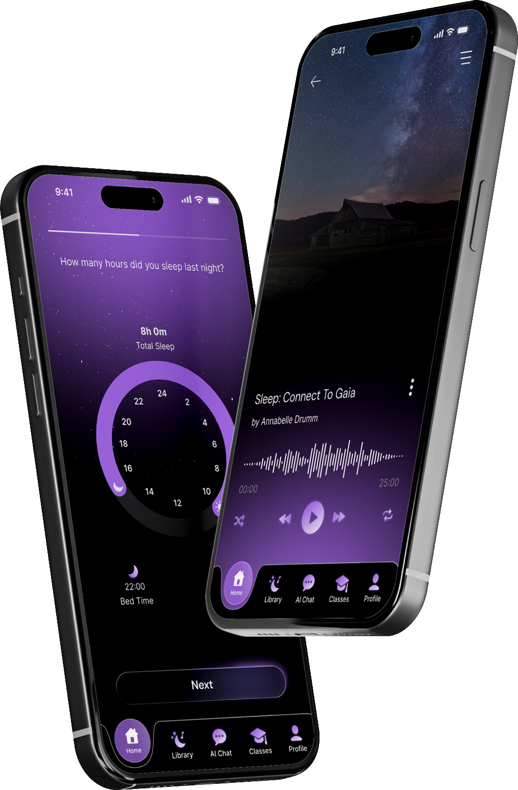
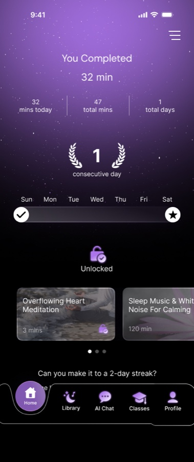
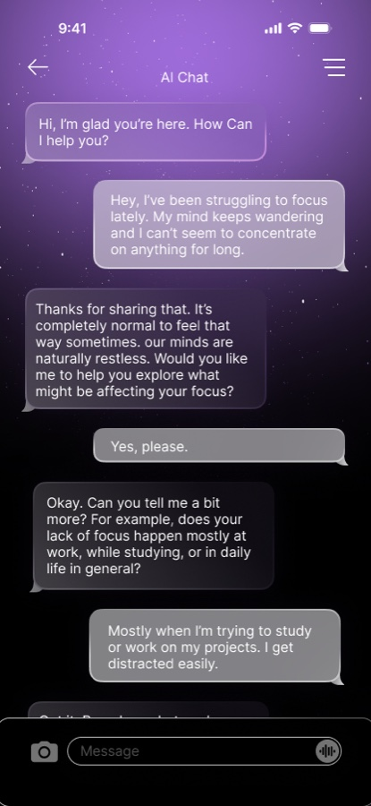
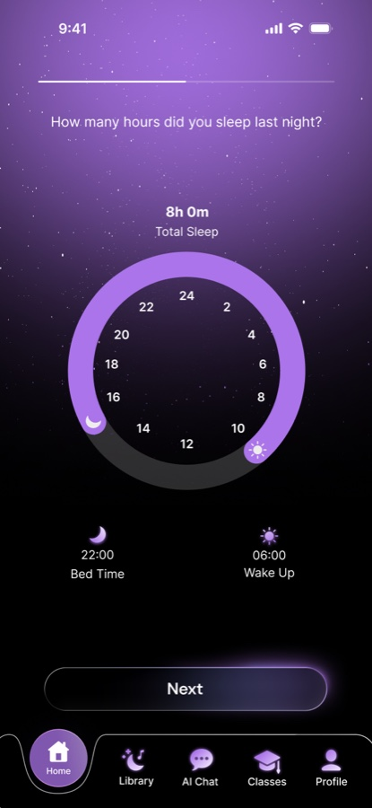
| Class | מתי |
|---|---|
.cs-media | כל תמונה/מוקאפ: ישר על רקע האתר, בלי מסגרת ובלי פייד. במובייל ממורכז ברוחב מלא |
--tall | מוקאפ לאורך: גובה עד min(78vh, 680px), ממורכז |
--md / --lg | רוחב עד 680 / 820px, כדי שמקור קטן לא יימתח ויטשטש |
--soft | פייד עדין לרקע בכל הצדדים. רק למוקאפ שנחתך בקצה (טלפון שיוצא מהפריים) |
--wide | לוח פרטים (components, UI kit): במובייל גובה קריא; רק .cs-scroll-x נגלל לצד, ותווית .cs-swipe מתחתיו נשארת במקום |
.cs-screen | מסך אפליקציה שטוח כטלפון (מסגרת מכשיר דקה). --fade = נעלם למטה (שלושה בשורה ב-.cs-screens), --solo = מסך בודד |
- מוקאפים: PNG שקוף מהמקור של שירן, אחרי
solid(בלי צל רצפה, שנראה כמו רקע כהה). רק אם אין:liftמהשקף +polish. - פרטים לא מתעמעמים: רכיבים, UI kit, ווירפריימים ומידע חשוב תמיד שלמים, חדים ובהירים. בלי פייד.
- אין מוקאפ חתוך כשיש גרסה שלמה. אין רקע סגול/שחור של השקף מאחורי מוקאפ.
- במובייל כל תמונה ממורכזת גם ויזואלית (בלי צל שמושך לצד).
- טיפוגרפיה וצבעים של המוצר המוצג: חיים (Google Fonts רק בעמוד הזה,
--ff), לא צילום של השקף. - טבלאות ותרשימים: HTML אמיתי, לא תמונה. בתרשים אין קופסה, מסגרת או קו מפריד, ובמובייל הוא ממורכז כבלוק אחד.
- Main features: הקו המקווקו העדין מעל כל פיצ'ר, לא קו ורוד מלא.
- Responsive logo:
.cs-pillנקי (בלי סימן צבעוני), והסימן הרספונסיבי (נחתך מקובץ הלוגו, אותה זווית) לצידו ומעט מתחתיו, לא ליד הלוגו הראשי. - לוח פרטים במובייל: רק
.cs-scroll-xנגלל, תוויתswipe →נשארת במקום. - לוחות שקופים (UI kit, רכיבים): רק
trim, בליsolid(ה-glow חלק מהעיצוב). - טקסט רץ (
.cs-text,.cs-note) נפרס על כל רוחב הגריד ומיושר לשמאל, לא גוש צר וממורכז. - אחרי כל שינוי: להעלות את
?v=Nשל style.css, main.js ו-data.js בכל העמודים.
Brand identity.cs-logos--pair · .cs-type__ramp · .cs-colors--five
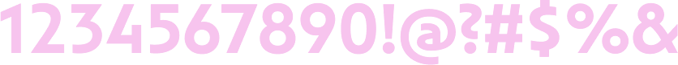
#532B88RGB 83, 43, 136#9B72CFRGB 155, 114, 207#C8B1E4RGB 200, 177, 228#F4EFFARGB 244, 239, 250#000000RGB 0, 0, 0
- שתי גרסאות לוגו (v1.15, 2026-10-25, Dyson):
.cs-logos.cs-logos--pair, זו לצד זו ובאותו גודל. גרסה שחורה (או עם קופסה במצגת) מתהפכת לרקע הכהה:.cs-logos__box= קופסה לבנה עם הלוגו השחור בפנים. במובייל אחת מתחת לשנייה, ממורכזות. - פונט בלי רישיון web ובלי קובץ: נחתך מהשקף ברזולוציה מלאה, והדיו הכהה הופך לשקיפות בלבן (שם) /
#F7C4EE(אלפבית, משקלים). שתי שורות אלפבית (a–z, מספרים) = שתי תמונות זו מתחת לזו; שורת המשקלים מהשקף בעמודת ה-meta תחתWeights(.cs-type__ramp, עד 29px). - צבעים עם hex + RGB ב-
.cs-colors--five: בדסקטופ 5 בשורה; מתחת ל-720px אחד בשורה (:has(code + code)), כדי ששורת ה-RGB לא תישבר. לבדוק שה-RGB תואם ל-hex (ב-Dyson השקף טעה ב-1).
Brand page.cs-brandmarks + .cs-text · .cs-colors small · .cs-ratio · .cs-quad
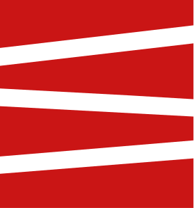
Signal Red#CA1515RGB 202, 21, 21The accent: the smallest, point-like element.- Black
#000000RGB 0, 0, 0Logo, type, full-bleed surfaces. 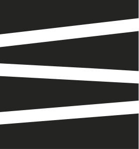
Gray#242423RGB 36, 36, 35Soft dark surfaces, overlays.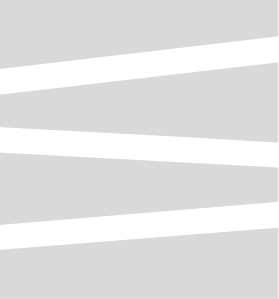
Silver#D9D9D9RGB 217, 217, 217Dividers, captions, quiet fields.
White#FFFFFFRGB 255, 255, 255Primary background.
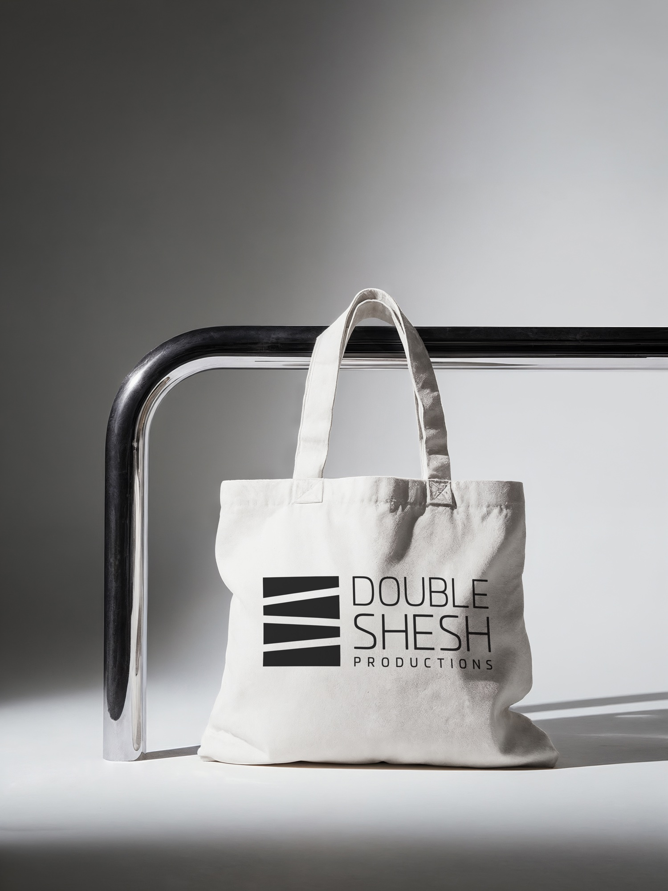
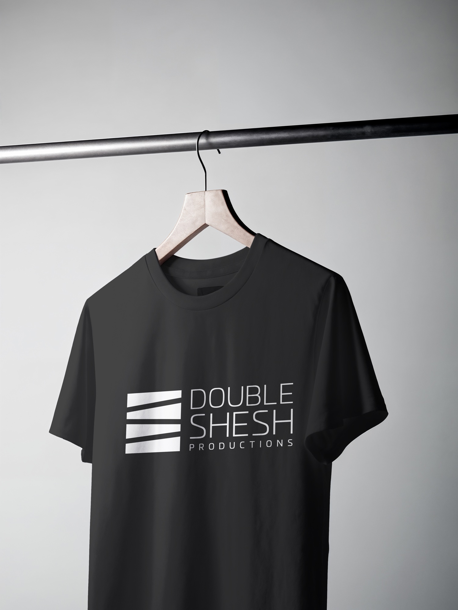
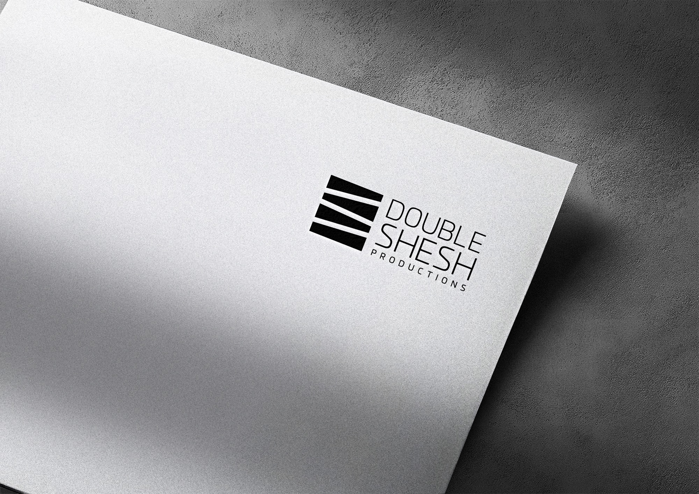
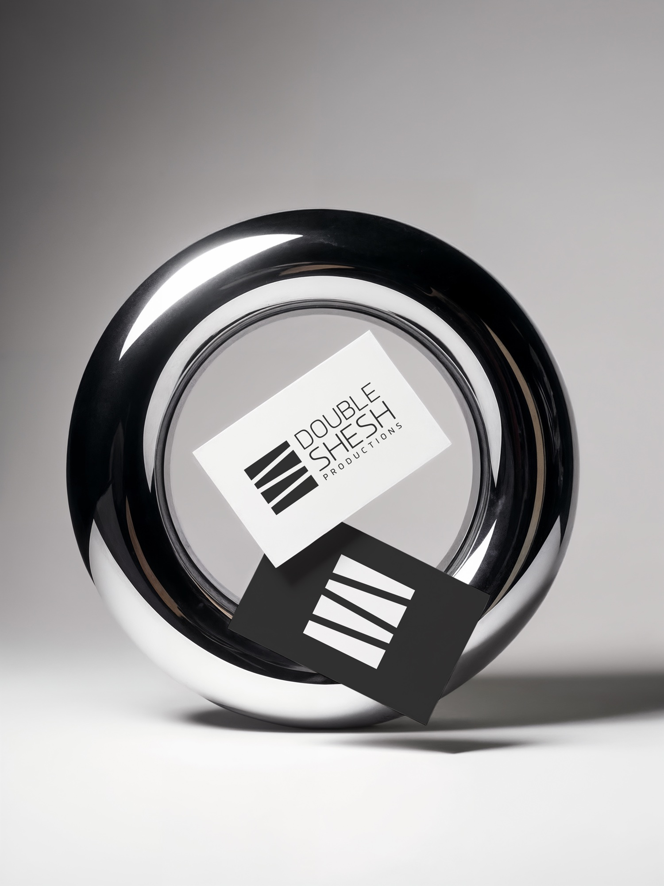
- עמוד מיתוג גרפי (v1.16, 2026-10-25, Double Shesh): התוכן מהשקפים, לא העיצוב שלהם. לוגו לבן בלבד, בלי רקע, ב-
.cs-brandmarks(כותרות Logo / Responsive), ומתחת, בלי כותרת, פסקת הקונספט (.cs-brandmarks + .cs-text, רווחclamp(40px, 5vw, 64px)). - צבעים כסימן של המותג:
.cs-colors--mark.cs-colors--five, הסימן הרספונסיבי בכל צבע (שחור ואפור עם--outline), ואחריו שם, hex, RGB ושימוש ב-<small>(13px, muted). מתחת ל-720px אחד בשורה: הסימן 72px משמאל והטקסט לצידו. - צבעים בעמודות במובייל
.cs-colors--stack(v1.19, 2026-11-10, The Hill of Memory): מתחת ל-720px כל צבע = הסימן (או ריבוע הצבע) למעלה, ומתחתיו השם וה-hex ממורכזים, שניים בשורה ואחרון בודד ממורכז, כמו הצבעים של Zenthor. דורס את הרשימה של צבע אחד בשורה (--five/--six/--plain). בפרויקט עם פלטה בסגנון משחק אפשר לוותר על RGB ועל שורת השימוש, ובדמויות להציג רק hex. - פס פרופורציות
.cs-ratio: כשהמצגת מראה כמה מקום כל צבע תופס. 14px, מסגרת--line-strong, כל קטע--c+--p(אחוז), ומתחתיו משפט ההיררכיה ב-.cs-note. - גריד מוקאפים
.cs-quad: ארבעה צילומים כרבעייה מסודרת, 2×2, רווחים שווים (clamp(12px, 2vw, 24px)), עד 960px, גם במובייל. כולם במסגרת 3:4 עםobject-fit: cover; נחתך רק רקע ריק, וכשצריך מזיזים עם--pos. - פונט בלי רישיון שמותקן אצל שירן (Arfilit): כמו Far Cry, רונדר כתמונה ב-headless Chrome מ-
~/Library/Fonts(שם לבן, השאר#F7C4EE). לא מעלים קבצי פונט לאתר. שתי שפות = שני.cs-type__rampזה מתחת לזה (רווח 10px).
Prototype tabs.cs-proto
figma embed
- רק כשיש יותר מפרוטוטייפ אחד. אחד = חלון רגיל.
- הטאב הפעיל = chip מלא בוורוד. חיצים ימינה/שמאלה עוברים בין טאבים (
initProtoTabsב-main.js). - רק ה-iframe של הטאב הראשון נטען מיד; האחרים (
data-src) נטענים בפתיחה הראשונה.
10 / Rules
Before you ship
צ'קליסט לכל רכיב או עמוד חדש:
- רק צבעים מהטוקנים. צבע חדש נכנס קודם ל-
:rootול-tokens.css, לא ישר לרכיב. - מסגרות 2px, פינות ישרות, צל אטום מהרשימה.
- הפונט לפי התפקיד (display / pixel / body / mono), לא לפי טעם.
- כפתור =
.btnהקיים. אין וריאנט מקומי. - אנימציה ב-
steps()+ גרסה ל-reduced motion. - אייקון חדש = מפה ב-
PX, לא SVG מבחוץ. - אין סתירה עם
context/04-decisions.md. - עדכון של
context/02-design-system.mdושל הקובץ הזה אם נוסף רכיב. - עמוד case study חדש: לפי מקטע 09 ולפי הסקיל
case-study.